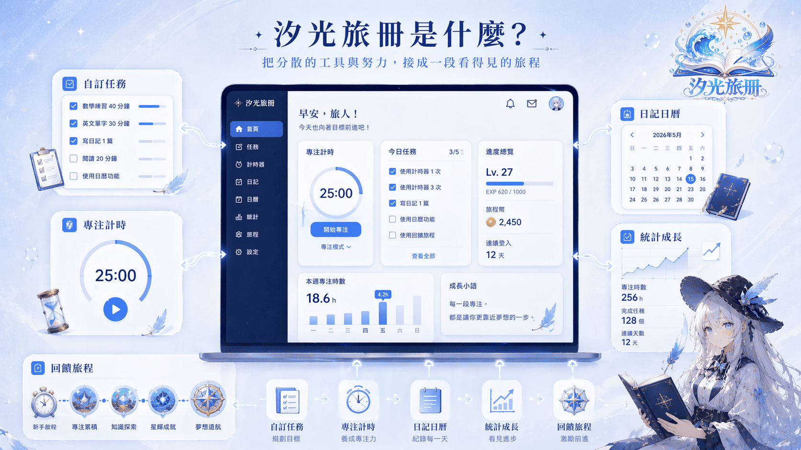

開始前就卡住
目標很多，但不知道第一步要做什麼，焦慮感會慢慢蓋過行動力。
01 學習卡住的原因
事情太多、工具太分散、做完之後沒有即時回饋，努力就很容易停在半路。

目標很多，但不知道第一步要做什麼，焦慮感會慢慢蓋過行動力。
待辦、計時、日曆、日記分散在不同地方，切換工具反而更容易中斷。
完成後只是被記下來，沒有形成成長感與下一次繼續開始的理由。
02 汐光旅冊是什麼？
汐光旅冊是一個網站型的遊戲化學習平台。你不只是勾待辦，也不需要在工具之間來回切換；你可以在同一個系統裡，把任務、計時、日記、日曆、統計與遊戲化回饋一步一步接起來。

03 從想做，到真的開始
建立任務、串接工具、開始專注、完成紀錄、看見回饋，讓每一次投入都有下一步。

04 核心功能

把今天要做的事變成清楚、可追蹤的小目標。
用計時讓投入被看見，也讓任務真的開始推進。
把安排、紀錄與回顧接在一起，留下每天的痕跡。
讓完成任務後不只結束，而是累積成持續動力。
用角色、風景與探索感，讓學習不再那麼孤單。

05 為什麼不只是一般工具？
很多人真正卡住的，不是完全不知道要做什麼，而是工具分散、回饋太弱、努力沒有形成下一次行動的理由。汐光旅冊把任務、計時、日記、日曆、統計與回饋接成一條可以持續前進的節奏。
06 使用情境
先想做的事整理成任務，再串接工具、開始專注、完成紀錄，最後看見回饋。

07 Popalea 角色陪伴
Popalea 是汐光旅冊世界中的陪伴角色。她不是單純的角色展示，而是讓這段學習旅程多一點陪伴感與記憶點。每一段專注、每一份紀錄，都能成為照亮世界的光。

08 這次募資會用在哪裡？
優化自訂任務、專注計時、日記日曆、統計與回饋循環。
改善頁面排版、資訊呈現與不同裝置上的操作一致性。
強化儲存、備份與跨裝置體驗，降低資料遺失風險。
透過實際測試回報修正錯誤、改善流程與穩定度。
補足教學、上手流程、品牌內容與後續世界觀素材。
09 贊助方案
你支持的不只是功能上線，而是支持一個讓學習更容易開始、也更願意持續的作品繼續走下去。
10 展示影片
點擊右側按鈕即可前往 YouTube 觀看展示影片。
FAQ 常見問題
依照你選擇的方案不同，將獲得對應的數位回饋、使用資格、支持者優先使用資格或限定支持者內容。
現階段以網站形式為主，方便直接使用、展示與持續更新，後續再視發展規劃其他版本。
核心版資格會以汐光旅冊主要功能為主，包含自訂任務、專注計時、日記日曆、基礎統計與遊戲化回饋等核心使用內容。
若因穩定性、使用回饋或整體體驗考量需要調整，會向支持者更新說明，並以維持可用性與完成度為優先。